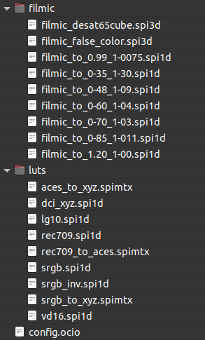

II.F - Concevoir une chaîne de fabrication avec OCIO¶
L’intérêt d’OCIO* réside dans le fait que l’on va pouvoir, en l’utilisant, configurer toute la chaîne de production en une seule fois, pour tous les logiciels de la chaîne (pour autant qu’ils soient compatibles avec OCIO).
En général, quand on configure une chaîne de fabrication utilisant OCIO, on part d’une config existante qu’on modifie en fonction des besoins du projet et des choix artistiques et de fabrication.
Un ensemble de config est disponible dans les téléchargements de OpenColorIO, comprenant notamment ACES, spi-anim et spi-vfx, développé par Sony Pictures Imageworks. Une autre config est disponible avec Blender.
F.1 - Mise en place¶
La mise en place de OCIO sur une chaine de production est relativement simple. Il faut d’abord choisir une configuration à utiliser, et éventuellement la modifier et l’adapter à ses besoins (voir section suivante “Anatomie d’une config OCIO”).
Le principe est ensuite de donner à chaque application le chemin du fichier de configuration config.ocio. Cela peut être fait facilement pour toutes en modifiant la variable d’environnement OCIO, en lui donnat le chemin du fichier de configuration.
On peut aussi en général donner un chemin spécifique à chaque application ; dans ce cas la méthode varie suivant l’application.
F.2 - Anatomie d’une config OCIO¶
Une configuration OCIO consiste en fait en un ensemble de LUT* accompagnées d’un simple fichier texte contenant la configuration proprement dite, toujours nommé config.ocio.
Voici par exemple la config Filmic utilisée par Blender:

Le fichier de config se divise en plusieurs sections, en général dans l’ordre suivant :
- Métadonnées, comprenant diverses informations.
- Roles, définissant dans quels cas quels espaces colorimétriques doivent être utilisés.
- Displays, définissant les espaces à utiliser pour l’affichage selon les écrans.
- Colorspaces, contenant la liste des espaces colorimétriques utilisés.
- Looks (optionnel), contenant la liste de LUT et transformations pouvant être ajoutées à l’image.
D’autres sections peuvent être ajoutées, voir la documentation officielle pour les détails sur opencolorio.org.
Des commentaires sans incidence sur la configuration peuvent aussi être ajoutés dans le fichier. Une ligne contenant un commentaire doit simplement commencer par le caractère #.
Hint
La syntaxe suit en fait la norme YAML.
Nous expliquons ici seulement les différentes section qu’un utilisateur courant peut être amené à modifier, mais toutes les sections peuvent être manipulées par les utilisateurs plus avancés. Il faut alors se référer à la documentation officielle de OpenColorIO.
F.2.a - Métadonnées¶
Exemple :
ocio_profile_version: 1
search_path: "luts:filmic"
strictparsing: true
luma: [0.2126, 0.7152, 0.0722]
description: RRT version ut33
Voici la description de quelques paramètres courants :
- ocio_profile_version : soit
1soit2, suivant la version de OCIO devant être utilisée avec cette config. - description (optionnel) : une brève description
- name (optionnel) : un nom unique
- search_path (optionnel) : définit où sont les LUT nécessaires à la config. Dans cet exemple, elles sont dans deux sous-dossiers (séparés par
:) :lutsetfilmic. - luma (optionnel et abandonné) : ancienne valeur utilisée notamment par OCIO pour les conversions en noir et blanc des couleurs. Cette valeur n’est en réalité plus utilisée nulle part, on peut ne pas la mettre. Par défaut, elle correspond à la luminance des primaires Rec. 709.
F.2.b - Roles¶
La section roles est celle qu’on modifiera le plus souvent ; c’est celle qui définit comment sont utilisés les différents espaces colorimétriques disponibles, quels doivent être les espaces par défaut lors des différentes étapes de fabrication, etc.
Exemple (commenté) de Blender :
roles:
reference: Linear
# Internal scene linear space
scene_linear: Linear
rendering: Linear
# Default color space for byte image
default_byte: sRGB
# Default color space for float images
default_float: Linear
# Default color space sequencer is working in
default_sequencer: sRGB
# Color spaces for color picking and texture painting (not internally supported yet)
color_picking: sRGB
texture_paint: Raw
# Non-color data
data: Non-Color
# CIE XYZ color space
XYZ: XYZ
Sur chaque ligne, on définit le role, puis l’espace colorimétrique à utiliser. Le nom de l’espace doit être celui d’un des espaces disponibles dans la liste de la section suivante.
Exemple de ACES :
roles:
color_picking: Output - sRGB
color_timing: ACES - ACEScc
compositing_linear: ACES - ACEScg
compositing_log: Input - ADX - ADX10
data: Utility - Raw
default: ACES - ACES2065-1
matte_paint: Utility - sRGB - Texture
reference: Utility - Raw
rendering: ACES - ACEScg
scene_linear: ACES - ACEScg
texture_paint: ACES - ACEScc
Voici quelques explications sur les différents roles (classement alphabétique) :
- color_picking : espace des sélecteurs de couleurs.
- color_timing : espace pour les corrections colorimétriques.
- compositing_linear : espace pour le compositing.
- compositing_log : espace alternatif pour certaines opérations de compositing.
- data : espace des fichiers (EXR) contenant autre chose que de la couleur (normal maps, speculaires, etc.).
- matte_paint : espace des images utilisées en matte painting.
- reference : espace servant de base pour tous les autres ; les autres espaces sont définis en fonction de celui là.
- rendering : espace à utiliser pour le rendu.
- scene_linear : espace de travail principal : celui du rendu 3D notamment, celui de la génération de l’image.
- texture_paint : similaire à matte_paint mais pour les textures utilisées sur des objets 3D.
Note
Toutes les applications ne respecteront pas forcément tous les rôles : certains ne sont pas supportés, ou bien l’application ne permet pas de les changer (par exemple, Blender ne permet pas de modifier l’espace de son sélecteur de couleurs)
Certaines applications peuvent aussi comprendre d’autres roles additionnels qui ne sont pas listés ici. C’est notamment le cas de Blender avec les roles commençant par default_ par exemple.
F.2.c - Displays¶
La section displays définit la liste des différents affichages possible, par exemple les écrans de travail et projecteurs de salle de projection.
Chaque “display”, affichage, a une liste de vues, “views”, possible, permettant de modifier l’affichage, par exemple pour une validation technique, pour mieux discerner les couleurs sombres, etc.
Exemple de Blender :
displays:
sRGB:
- !<View> {name: Standard, colorspace: sRGB}
- !<View> {name: Filmic, colorspace: Filmic sRGB}
- !<View> {name: Filmic Log, colorspace: Filmic Log}
- !<View> {name: Raw, colorspace: Raw}
- !<View> {name: False Color, colorspace: False Color}
XYZ:
- !<View> {name: Standard, colorspace: XYZ}
- !<View> {name: DCI, colorspace: dci_xyz}
- !<View> {name: Raw, colorspace: Raw}
None:
- !<View> {name: Standard, colorspace: Raw}
La vue standard affiche directement les valeurs sRGB ; Filmic Log peut être utilisé pour contrôler les zones sombres. Raw affiche les données sans conversion, pour par exemple effectuer une vérification technique d’une couche de données (normal map, occlusion, etC.). False Color sert aussi aux vérifications techniques de l’image.
Exemple de ACES :
displays:
ACES:
- !<View> {name: sRGB, colorspace: Output - sRGB}
- !<View> {name: DCDM, colorspace: Output - DCDM}
- !<View> {name: DCDM P3 gamut clip, colorspace: Output - DCDM (P3 gamut clip)}
- !<View> {name: P3-D60, colorspace: Output - P3-D60}
- !<View> {name: P3-D60 ST2084 1000 nits, colorspace: Output - P3-D60 ST2084 (1000 nits)}
- !<View> {name: P3-D60 ST2084 2000 nits, colorspace: Output - P3-D60 ST2084 (2000 nits)}
- !<View> {name: P3-D60 ST2084 4000 nits, colorspace: Output - P3-D60 ST2084 (4000 nits)}
- !<View> {name: P3-DCI, colorspace: Output - P3-DCI}
- !<View> {name: Rec.2020, colorspace: Output - Rec.2020}
- !<View> {name: Rec.2020 ST2084 1000 nits, colorspace: Output - Rec.2020 ST2084 (1000 nits)}
- !<View> {name: Rec.709, colorspace: Output - Rec.709}
- !<View> {name: Rec.709 D60 sim., colorspace: Output - Rec.709 (D60 sim.)}
- !<View> {name: sRGB D60 sim., colorspace: Output - sRGB (D60 sim.)}
- !<View> {name: Raw, colorspace: Utility - Raw}
- !<View> {name: Log, colorspace: Input - ADX - ADX10}
ACES ne trie pas par différents affichages, et tout est rassemblé sous un seul affichage.
Sources et références